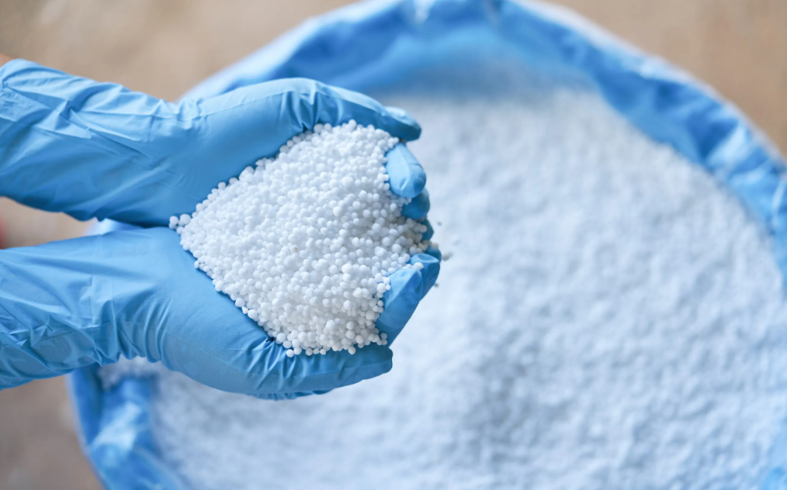

Urea 46% Fertilizer Overview
Urea 46% Fertilizer is a high-concentration nitrogen fertilizer that delivers 46% nitrogen by weight, making it one of the most efficient and widely used nitrogen sources in modern agriculture. It is a white crystalline solid with an NPK ratio of 46-0-0, meaning it provides nitrogen without phosphorus or potassium, which makes it ideal when nitrogen is the primary nutrient needed.
What It Is
Urea 46% is a solid nitrogen fertilizer produced from anhydrous ammonia and is classified as a neutral, high-analysis fertilizer. It typically contains a minimum of 46% total nitrogen on a dry basis, with low moisture content (often ≤0.5%) and controlled biuret levels (usually ≤1.0%) to ensure crop safety and minimize plant stress. Because it has the highest nitrogen content among common nitrogenous fertilizers, urea offers the lowest cost per pound of nitrogen compared to alternatives like ammonium nitrate (34% N) or ammonium sulfate (21% N). This high analysis also reduces freight, storage, and handling costs, making it economically attractive for large-scale farming.
Main Benefits
The primary benefit of Urea 46% is its ability to deliver a large amount of nitrogen in a compact form, promoting rapid vegetative growth, lush green foliage, and improved photosynthesis. Nitrogen is essential for leaf development and biomass production, which directly supports higher crop yields in grains, vegetables, and ornamental plants. Additionally, urea is versatile and neutral, meaning it can be used on almost all soil types and crops without causing significant soil pH changes. It is not subject to fire or explosion hazards, making storage and transport safer compared to certain other nitrogen fertilizers.
Typical Applications
Urea 46% is used in a wide range of agricultural applications, including broadcast application, banding, incorporation into soil, irrigation, and even as a foliar spray for certain crops. It is especially beneficial for crops that respond strongly to high nitrogen, such as corn, rice, wheat, leafy vegetables, and lawns. However, to maximize nitrogen efficiency, urea should be incorporated into the soil rather than left on the surface, especially in warm weather, to prevent ammonia volatilization losses. A rainfall or irrigation of as little as 0.25 inches is sufficient to move urea into the soil and reduce nitrogen loss as ammonia gas.
Why Choose It
Urea 46% Fertilizer is the most widely used nitrogen-based fertilizer globally in terms of tonnes, thanks to its high nitrogen content, affordability, and broad applicability across crops and soils. For farmers and traders, it offers a high-return, cost-effective solution for boosting vegetative growth and achieving higher yields in commercial agriculture. While our core expertise is bitumen, we also source and supply related commodities like Urea 46% Fertilizer for verified buyers.
